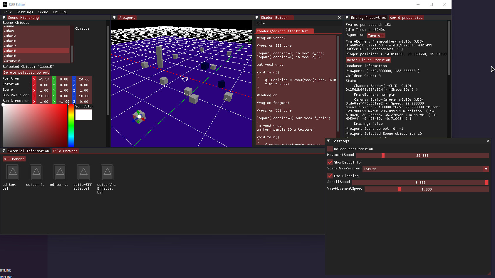

check out the new, cool and sick
terminal
idk, ms-dos like or smth, i like
check out this cool screenshot of my engine:

i haven't worked on it since a few months
because of the baranium language and also the
amount of motivation i have for programming atm
i still have no idea what to put on main page
just check out my
projects
or
socials
i guess